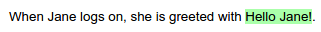

Since: Concordion 2.0.0
Markdown provides an easy-to-read and easy-to-write syntax for converting plain text to structured XHTML.
Concordion's Markdown support allows you to write your Concordion specification in the Markdown format, converting the Markdown to XHTML at runtime and running the resultant XHTML as a Concordion specification.
The following assumes that you already understand Concordion and Markdown. If not, please visit the Concordion tutorial and read the Markdown basics.
Markdown links are used to embed Concordion commands. This keeps the grammar readable and maintains a clean separation of Concordion commands from the original text.
As an example:
When Jane logs on, she is greeted with Hello Jane!
is marked up as:
When [Jane](- "#name") logs on, she is greeted with [Hello Jane!](- "?=greetingFor(#name)")
where:
[Jane](- '#name') sets the #name variable to Jane.[Hello Jane!](- '?=greetingFor(#name)') asserts that the greetingFor(#name) method returns Hello Jane!When viewed on Github or in the preview pane of a Markdown editor, the original text is displayed as a link, and the Concordion command shown when you hover over the link:
When the specification is run with a fixture that implements the greetingFor(String) method, the links are converted to spans and the output is marked up to show whether the assertion is passing or failing:

Concordion commands are differentiated from other Markdown links by using the value - for the URL:
[value](- "command")
As an alternative to inline links, reference style links are supported, for example:
[value][id]
[id]: - "command"
or
[value][]
[value]: - "command"
Reference style links can help improve readability of the Markdown document, especially for table headers or lengthy commands.
A shorthand syntax is provided for the set, assert equals and execute commands.
| Command | Grammar | Example |
|---|---|---|
| Set | [value](- "#varname") |
[Jane](- "#name") |
| Assert Equals | [value](- "?=#varname") |
[Hello Jane!]<br/>(- "?=#greeting") |
| Execute | [value](- "expression") |
[The greeting is]<br/>(- "#greeting=greetingFor(#name)") |
| Other commands | [value](- "c:command") |
[is notified]<br/>(- "c:assertTrue=isNotified()") |
The Github Flavored Markdown tables syntax is used.
The command to be run on the table is specified in the first table header column, followed by the command for that column (if any), with the commands for each column of the table specified in the table header.
The execute command is specified in the first table header column, followed by the command for that column (if any), with the commands for each column of the table specified in the relevant table header column.
The link text for the execute command is not used, but must contain at least 1 space, eg. [ ] to be a valid markdown link.
|[ ](- "#z=add(#x, #y)")[Number 1](- "#x")|[Number 2](- "#y")|[Result](- "?=#z")|
| --------------------------------------: | ---------------: | ---------------: |
| 1| 0| 1|
| 1| -3| -2|
Reference-style links can be used for one or more of the links to improve readability of the Markdown source:
|[add][][Number 1](- "#x")|[Number 2](- "#y")|[Result](- "?=#z")|
| ------------------------: | ---------------: | ---------------: |
| 1| 0| 1|
| 1| -3| -2|
[add]: - "#z=add(#x, #y)"
Since: Concordion 2.1.0
Concordion can execute each row in a table as an example. To do this, use the c:example tag in one of the table header columns and specify the example name in the corresponding column of each row.
For example:
|[ ](- "#z=add(#x, #y)") [Example Name](- "c:example") | [Number 1](- "#x")|[Number 2](- "#y")|[Result](- "?=#z")|
| -------------------------- | ----------------: | ---------------: | ---------------: |
| Positive numbers | 1| 0| 1|
| Negative numbers | 1| -3| -2|
The verifyRows command is specified in the first table header column, followed by the command for that column (if any), with the commands for each column of the table specified in the relevant table header column.
|[_check GST_][][Sub Total][]|[GST][]|
| -------------------------- | ----: |
| 100| 15|
| 20| 2|
[_check GST_]: - "c:verifyRows=#detail:getInvoiceDetails()"
[Sub Total]: - "?=#detail.subTotal"
[GST]: - "?=#detail.gst"
Note that reference-style links have been used to improve the readability of this example. Inline links are equally valid.
Concordion 2.0 introduces a new example command.
Adding an inline link to a header changes the header into an example command. You can use either the Atx-style or Setext-style headers. For example:
## [Example 1](- "exampleName")
or
[Example 1](- "exampleName")
----------------------------------
will create an example named exampleName with the H2 heading Example 1.
If the example name is not specified, it will be generated from the heading title. For example:
# [Check 3 items](-)
will create an example named check-3-items with the H1 heading Check 3 items.
The example block continues until it is closed either implicitly or explicitly.
An example is implicitly closed on any of these conditions:
h3 and a h2 header is encountered), orTo explicitly close an example, create a header with the example heading struck-through. For example:
## ~~Example 1~~
will close the example with the heading Example 1
Note: the example command requires Concordion 2.0.0 or later.
Adding a title of c:run to an inline link will add a run command to that link. For example:
[Address](Address.html "c:run")
will run the Address.html specification.
See the Grammar Specification for the full Grammar.
The extension can also be configured to output the source HTML that is generated, and to add extensions to the Markdown language.
The official IntelliJ IDEA Markdown editor is not recommended since it does not support tables. Instead, the Markdown plugin is recommended. This plugin uses the same underlying Pegdown library as the Concordion Markdown extension. After installing the plugin, you will need to configure the settings to enable Tables and Strikethrough, plus any additional Markdown language extensions that you configure.
Available Eclipse plugins include:
| Plugin | Has editor? | Has viewer? | Viewer supports tables and strikethrough |
|---|---|---|---|
| Mylyn Wikitext Editor | Y | Y | N |
| Markdown Text Editor | Y | N | N |
| Github Flavored Markdown Viewer | N | Y | Y |
In order to have editing features and the ability to view with tables and strikethrough, you may want to install either of the first 2 editor plugins listed along with the viewer plugin.
The syntax used for this extension is compatible with Github Flavored Markdown, allowing specifications to be edited and previewed in the Github editor.
Please let us know what editor you are using, and what support you get from it. Either edit this page and raise a pull request or create an issue on this project to let us know. Thanks :)
{kind=link}